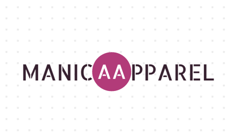

Manica Apparel
BUSINESS LOGO
JUNE 21 2021
EVENT SUMMARY
My friend have a thrift shop business and she was just getting started, so she ask me what steps are needed to get everybody know her thrift shop. I offer her a business logo that can everbody identify what is her business. I'm not good being a graphic designer because i hate arts, But when im doing this it's quite fun and im glad to learn new skills and help her for her business and from now on i'm practicing everday to be a good Graphic designer in the future.

